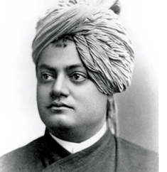

swami vivekananda

"I am proud to belong to a religion which has taught the world both tolerance and universal acceptance. We believe not only in universal toleration, but we accept all religions as true. I am proud to belong to a nation which has sheltered the persecuted and the refugees of all religions and all nations of the earth. I am proud to tell you that we have gathered in our "
"The present convention, which is one of the most august assemblies ever held, is in itself a vindication, a declaration to the world of the wonderful doctrine preached in the Gita", swami vivekananda ,“Whosoever comes to Me, through whatsoever form, I reach him; all men are struggling through paths which in the end lead to me.” Sectarianism, bigotry, and its horrible descendant, fanaticism, have long possessed this beautiful earth.
missionary: swami vivekananda education society;
Areas of expertise: hindusium, saint, ayurveda and puran;
by:- satyaprakash shriram s.